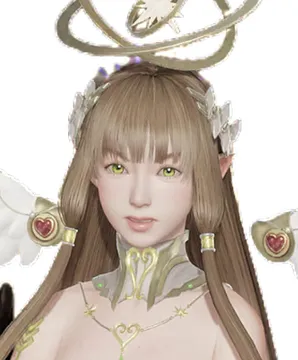
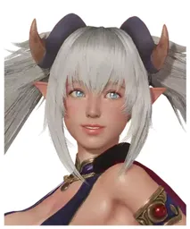
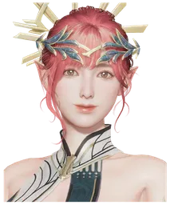
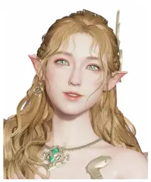
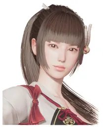
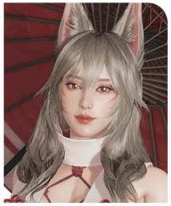
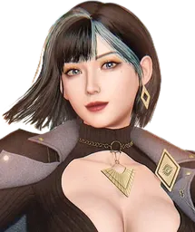
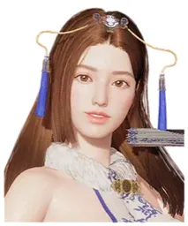
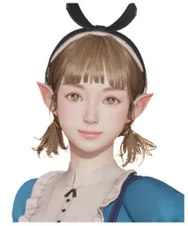
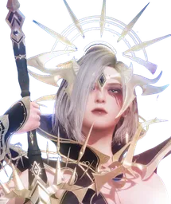

| 角色 | 項鍊 | 耳環 | 鎧甲 | 手套 | 鞋子 | 戒指 | 神器 | 陣容 | SP | 介紹 | |
|---|---|---|---|---|---|---|---|---|---|---|---|
| 私房天使PVP 兼顧 PVE | 速度套 | 傳說速度 | 傳說 | 雙速 | 本專 | 私房＋極樂＋任意 2 人 | 3 個滿 | — | |||
| 極樂甜心 | 速度套／暴擊套 | 傳說速度 | 傳說速度／征服／雙攻加速度 | 征服 | 本專 | 私房＋極樂 | 3 個滿 | — | |||
 | 寵溺女神 | 速度套 | 傳說速度 | 征服 | 本專／速度專／生命專／防禦專 | 私房＋極樂＋寵溺／單飛 | 3 個滿 | 新 PVP 露米婭可以 T1 了 | |||
| 暴擊套 | 征服 | 征服 4 征服 | |||||||||
| 角色 | 項鍊 | 耳環 | 鎧甲 | 手套 | 鞋子 | 戒指 | 神器 | 陣容 | SP | 介紹 | |
|---|---|---|---|---|---|---|---|---|---|---|---|
| 探秘者 | 速度套 | 傳說速度 | 傳說 | 雙速 | 速度專 | 私房＋極樂＋探秘／探秘＋赤血＋白耀＋群傷 | 2 個滿 | 推條 | |||
| 鳴月PVP 兼顧 PVE | 速度套／傳說聖佑 | 傳說速度 | 傳說聖佑 | 速度專 | 鳴月＋靈恩 | 3 個滿 | 鳴麻 | ||||
| 白耀聖鎧 | 速度套 | 傳說速度 | 傳說征服 | 傳說征服／雙速 | 速度專 | 比較百搭 | 3 個滿 | — | |||
| 靈恩滿溢PVP 兼顧 PVE | 速度套／傳說聖佑 | 傳說速度 | 傳說聖佑 | 本專 | 鳴月＋靈恩 | 3 個滿 | 鳴麻 | ||||
| 赤血霸王 | 暴擊套／神臨 | 傳說神御 | 傳說神御 | 本專 | 比較百搭 | 3 個滿 | — | ||||
| 彼岸毒花PVP 兼顧 PVE | 速度套／暴擊套 | 傳說速度 | 傳說速度／征服／雙攻加速度 | 征服 | 本專 | 群傷補刀用 | 3 個滿 | — | |||
 | 骨血朱紋 | 神臨 | 神御 | 神御 怕暈就帶神臨鞋戒 | 本專 | 毒奶、鳴麻 | 3 個滿 | — | |||
| 光耀舞姬 | 抵抗套／傳說神臨 | 傳說速度／傳說堅壁 | 傳說神臨 | 抵抗專／速度專／生命專 | 搭荷月 | 3 個滿 | 毒奶 | ||||
| 荷月不吃 SP | 神臨 | 堅壁 | 神臨 | 生命專／抵抗專 | 搭光耀 | 可點 1，可不點 | 毒奶 | ||||
| 天音女神不吃 SP | 神臨 | 堅壁 | 聖佑 | 生命專／本專 | 掛件 | 可點 1 連結，可不點 | 掛件 | ||||
| 純白戀曲 | 速度套 | 傳說速度 | 神御 | 神御／雙速 | 速度專 | 保人吧 | 保人點 2SP | 保人用吧 | |||
| 奪心者不吃 SP | 神臨 | 堅壁 | 神臨 | 本專 | 掛件 | 可不點 | 掛件 | ||||
| 高雅綻放不吃 SP | 速度套 | 傳說速度 | 神臨 | 本專／速度專 | — | 要麼 2 連結要麼不點 | 保人的／可掛件 | ||||
| 堅壁 | 神御 | 神臨 | |||||||||
| 血月戰鬼PVP 兼顧 PVE | 原表未列配裝 | — | 特定陣容進攻 | 不點 | 可掛件（不用特意養），沒抽不用抽。PS：不推薦抽也不推薦養，除非你沒打 PVE 的單體卡 | ||||||
| 冰釀精選 | 速度套／傳說聖佑 | 傳說速度 | 神臨 | 速度專 | — | 2 連結，20260717 沒點就別點了 | — | ||||
| 黑曜戰衣不吃 SP | 速度套／暴擊套 | 傳說速度 | 傳說征服 | 本專 | 掛件 | 2 個滿或者不點 | 掛件 | ||||
 | 深淵攫取不吃 SP | 暴擊套 | 征服 | 征服 | 暴擊專／效果命中專 | 補刀 | 3 個滿或者不點（推薦不點） | 要塞的飛龍、據點的比蒙 | |||
| 初雪無垢不吃 SP | 原表未列配裝 | — | — | — | 掛件（不用特意拉，沒有不影響） | ||||||
| 御靈神探 | 速度套 | 傳說速度 | 傳說征服 | 本專 | — | 3 個滿 | — | ||||
| 寂靜之冕 | 神臨 | 神御 | 神臨 | 生命專／抵抗專 | 受隊（建議帶個輸出） | 要麼點 2SP，要麼不點 | — | ||||
原表未列配裝
原表未列配裝
| 角色 | 項鍊 | 耳環 | 鎧甲 | 手套 | 鞋子 | 戒指 | 神器 | 陣容 | SP | 介紹 | |
|---|---|---|---|---|---|---|---|---|---|---|---|
| 靈秀芳眸 | 生命套 | 傳說神御 | 傳說神御 | 本專 | — | 不點 | 搭光耀荷月 | ||||
| 鐵械戰兔 | 原表未列配裝 | 本專／速度專 | — | 打算用就 3 個 SP 滿，我不推薦現在養 | 能擋一次傷害 | ||||||
| 虛幻武器 | 原表未列配裝 | 本專／速度專 | — | 打算用就 3 個 SP 滿，我不推薦現在養 | 閃避隊的 | ||||||
 | 自摸天后 | 速度套／暴擊套 | 傳說速度 | 傳說速度／征服／雙攻加速度 | 征服 | 本專／速度專 | 群傷輸出 | 3 個滿（沒養就別養了） | — | ||
| 誘情之禮 | 暴擊套 | 傳說神御 | 傳說神御 | 本專／暴擊專 | 補刀防驅 | 不點 | — | ||||
| 蜃影女神 | 暴擊套／速度套 | 傳說速度 | 征服 | 本專 | BUFF 手 | 3SP（以前點的，現在不點了） | — | ||||
 | 淨月 | 暴擊套 | 征服 | 征服 4 征服 | 本專 | 打閃避隊能用 | 不點 | — | |||
| 迅夢飛影 | 神臨 | 堅壁 | 神臨 | 本專 | 保人的 | 不點 | — | ||||
 | 玉面天狐 | 暴擊套 | 傳說神御 | 傳說神御 | 本專 | — | 不點 | 打特定陣容 | |||
| 墨染金香 | 速度套 | 傳說速度 | 傳說神御 | 本專／速度專 | — | 現在不點／以前的 2SP | 防禦卡速度慢，欺負一下蜜室不全的 | ||||
 | 千面殺神 | 原表未列配裝 | 速度專 | — | 打算用就 3 個 SP 滿，我不推薦 | 閃避隊的，我個人用著一般 | |||||
| 白浪浮花 | 聖佑 | 神速 | 神臨 | 本專 | 受隊（建議帶個輸出） | 不點 | — | ||||
| 倩麗仙影PVP 兼顧 PVE | 生命套（紫） | 征服 | 征服 建議 4 征＋2 生命 | 本專 | 特定拆肉，一般搭天照荷月 | 3 個滿（因為 PVE 用） | 並不推薦極速秒一個，可靠調血針對，建議 4 征打特定陣容用 | ||||
 | 彪艷旗裝 | 暴擊套（紫） | 征服 | 征服 建議 4 征＋2 暴擊 | 本專 | 特定拆肉，一般搭天照荷月 | 不點 | — | |||
 | 仙境奇想 | 命中套（紫） | 神速 | 征服 | 本專／速度專 | 異常隊 | 不點 | — | |||
| 抵抗套（紫） | 神速 | 神臨 | |||||||||
 | 噬界者 | 生命套（紫） | 征服 | 征服 建議 4 征＋2 生命 | 本專 | 補刀 | 不點 | — | |||
原表未列配裝
原表未列配裝
原表未列配裝
內容整理自玩家社群流傳的 PVP 榜（原表為簡體，轉繁時保留玩家用語），數值與強度以遊戲內實際為準。